تغييرات ١٦ نوفمبر
كل اللي تغيّر اليوم، كل تغيير بصوره قبل وبعد. صور «قبل» من آخر commit (ecfde34)، وصور «بعد» من الكود الحالي، كلها على جوال ٣٦٨ × ٦٥٢. ما سويت commit.
- جديد العدد المشترك
- ١ وش الناقص؟
- ٢ قانون ١ إلى ن
- ٣ الشرح والنص
- ٤ الرقم البرتقالي
- ٥ شاشة جرّب
- ٦ الشاشة ما تكبر
- ٧ ترتيب الدرس
- ✓ الفحوصات
جديدقانون «العدد المشترك»: نفس شرح ١ إلى ن
«ok nice can you do the same thing you did to 1 to n law exactly with this»، وبعدها: «make it like مجموع الباقي is like what we have learned and exactly like before say this so they say oh! then it is easy»صورة ٩٧
قبل: الشرح كان مربعات: عشر خانات من ٥ إلى ٥٠، وتحتها عشر خانات من ١ إلى ١٠، وكل الأرقام صغيرة.
الحين: نفس طريقة ١ إلى ن. المثال كبير، وتحته الخطوات الثلاث: العدد المشترك ← مجموع الباقي ← اضربهم، وكل خطوة تنور وقتها:
- العدد المشترك: المثال صار ٥ + ١٠ + ١٥ + … + ١٠٠. أرقامه تنور واحد واحد («كلها من جدول ٥»). بعدين كل رقم يطلّع الـ٥ حقته لفوق ويبقى منه الباقي: ١٠ يصير ٢، و١٥ يصير ٣، و١٠٠ يصير ٢٠. وبعدها الـ٥ كلها تتجمع في ٥ وحدة قدام القوس: ٥ × (١ + ٢ + ٣ + … + ٢٠)، والـ٥ يطير للبطاقة.
- مجموع الباقي، ومنها تجي «آه! سهلة»: اللي داخل القوس هو نفس «١ + ٢ + ٣ + … + ٢٠» اللي انشرح في قانون ١ إلى ن قبل شوي. القوس ينط، وفهيم يقول: «١ + ٢ + … + ٢٠؟ هذا قانون ١ إلى ن اللي تعلّمته قبل شوي!». والخطوات تحت المثال تتبدّل لخطوات ذاك القانون نفسها، وقدامها اسمه بالذهبي: قانون ١ إلى ن: آخر عدد ← نصّه ← × اللي بعده.
- وبعدها يمشي نفس الشرح بالضبط داخل القوس: الأرقام تنطوي في ٢٠، والـ٢ البرتقالي يجي وينشق ٢٠ لـ١٠ و١٠ ويطيح واحد، و«× (٢٠ + ١)» يصير ٢١، و٢١٠ ينزل أخضر مثل قبل. وفهيم: «شفت؟ نفس اللي قبل بالضبط: ٢١٠. سهلة!».
- بعدها ترجع خطوات القانون، القوس يروح، و٢١٠ يطير للبطاقة تحت «مجموع الباقي».
- اضربهم: ٥ × ٢١٠، و١٠٥٠ ينزل أخضر ويطير للبطاقة. وآخر شي القانون يرجع كلام والأرقام تحته.
- ليش غيرت المثال من ٥٠ إلى ١٠٠؟ عشان اللي في القوس يطلع ١ إلى ٢٠، نفس مثال قانون ١ إلى ن بالضبط. سؤال الاختبار في الدرس (١٥ + ٣٠ + … + ١٥٠) ما يتكرر.
- «كمّل الخطوة» في الدرس (٣ + ٦ + … + ٣٠) صار يمشي نفس الخطوات: ٣ × (١ + … + ١٠) = ٣ × ٥٥ = ١٦٥. قبل كان ينط من القوس للجواب على طول، والـ٥٥ كان من الأرقام الغلط. الحين الأرقام الغلط: ٣٠، ١١، ٣٣٠.
- البطاقة نفسها ما تغيرت.
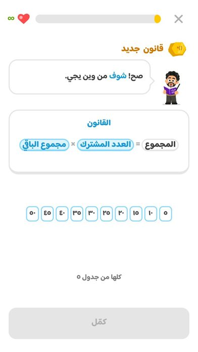
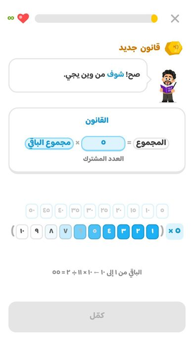
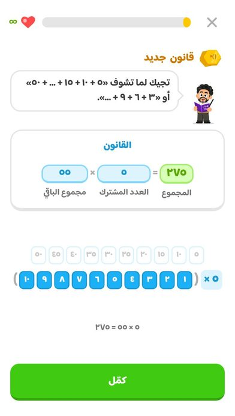
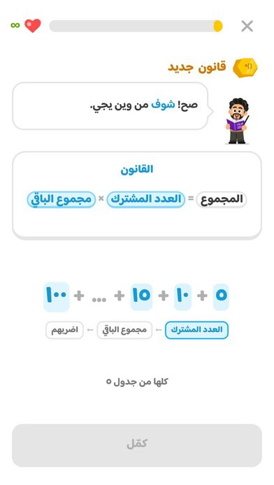
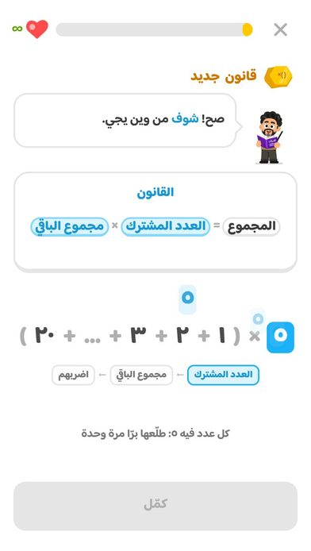
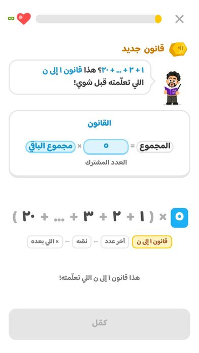
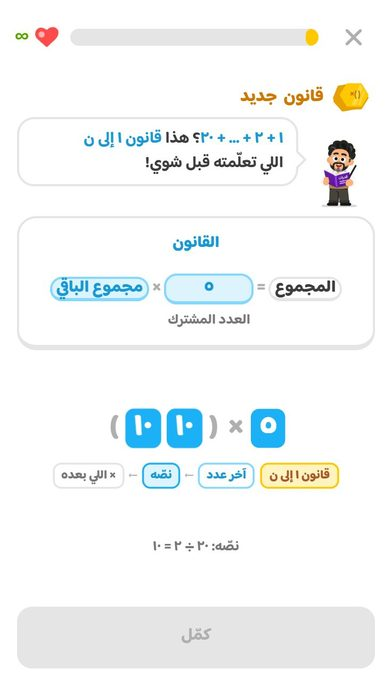
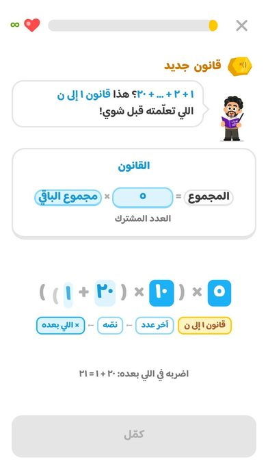
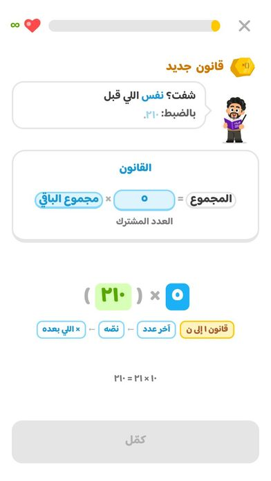
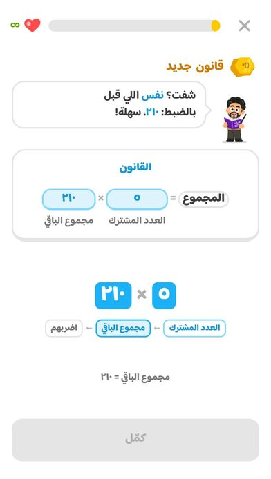
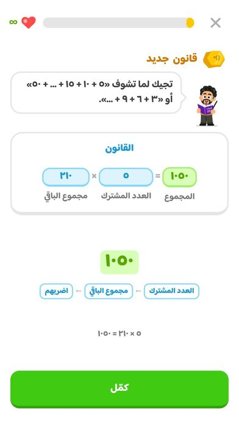
جرّبه هنا: اضغط «حفظته»، واختر الكلمة الناقصة، وشوف الشرح.
١«وش الناقص؟»: القانون يطلع كامل، والجواب يتحرك داخل الفراغ
«here the law على طول يروح … make the UI in it better and the animation better»، وبعدها: «dont make the اخر عدد go to the blank just do the answer animation»، و«i want the animation to happen here … like duolingo or ours»صور ٧٢، ٩٣، ٩٥، ٩٦
قبل: القانون الجديد ينرسم من أول لحظة وفيه فراغ، والخيارات صغيرة داخل البطاقة. يعني الطالب ينسأل عن قانون ما شافه.
الحين:
- القانون يطلع كامل وفهيم يقوله، وتحته: «ركّز فيه زين — بخبّي كلمة منه وأسألك عنها». الزر «حفظته» ويستنى الطالب بدون وقت.
- إذا ضغط «حفظته»، الكلمة تختفي ومربعها يصير فراغ متقطّع. الخيارات تطلع تحت البطاقة كأزرار كبيرة مثل أزرار الدرس.
- الجواب الصح: ما يطير شي من الأزرار. الكلمة تطلع داخل الفراغ، والفراغ نفسه يسوي حركة جواب دولينجو، نفس حركة «كمّل الخطوة»: ينزل شوي ويقفز، ويصير أخضر وتحته ظل رمادي، وتمر عليه لمعة ونجمتين. بعد ثانية يرجع أزرق ويبدأ الشرح.
- الجواب الغلط: الفراغ يصير أحمر ويهتز. الزر يصير أحمر ويسوي هزّة الجواب الغلط حقت الدرس، ويتعطّل. وفهيم يقول: «قريب! تذكّر القانون اللي شفته.»
- في الجوالات القصيرة تصير الخيارات اثنين في كل صف، عشان ما تنزل تحت «كمّل».
- نفس الشي في المراجعة داخل الدرس. أول درس في المسار ما تغيّر: القانون فيه يطلع كامل بدون سؤال.
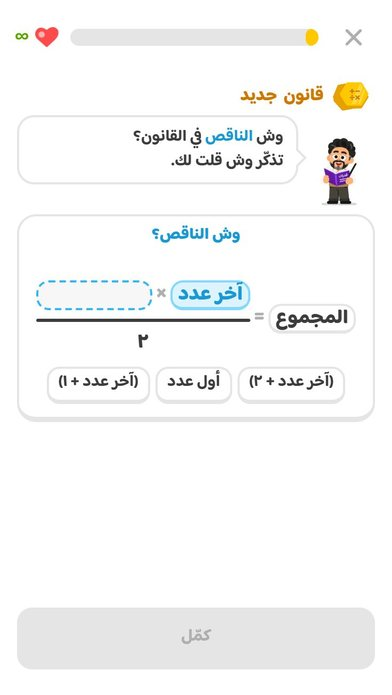

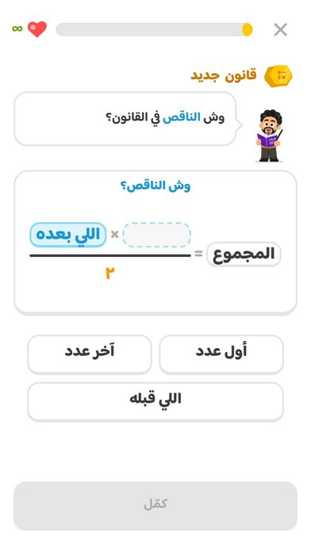
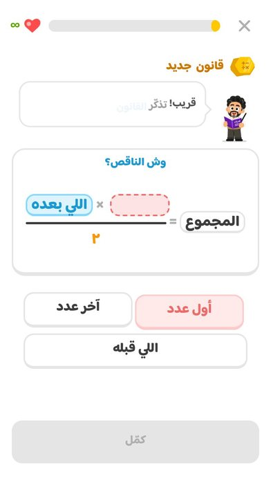
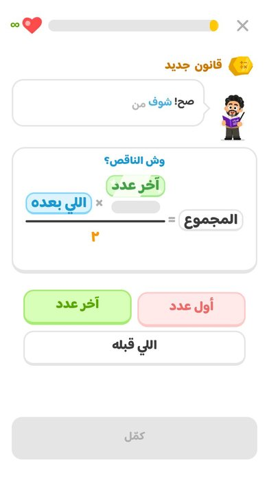
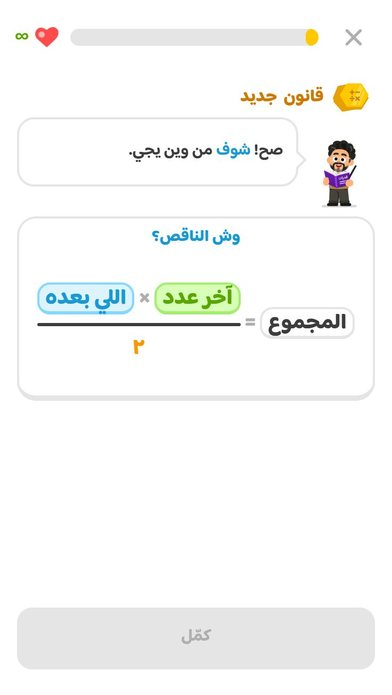
٢قانون «مجموع ١ إلى ن» بالشكل اللي رسمته
«dont make the law like this, make it like this exactly»، وبعدها: «make the 1 to n like this law»صور ٨٦، ٩٢
- البطاقة صارت: المجموع = آخر عدد × اللي بعده فوق خط الكسر، وتحته ٢.
- «اللي بعده» بدل «(آخر عدد + ١)» في كل مكان: البطاقة، «كمّل القانون»، كلام فهيم، التلميحات، قاعدة الدرس، وأسماء الفراغات في «كمّل الخطوة».
- الكلمات الغلط في «وش الناقص؟» و«كمّل القانون» صارت «اللي قبله» و«أول عدد».
- «كمّل الخطوة» (١ + … + ٥٠) يمشي خطوة خطوة، النص أول: ٥٠ ÷ ٢ × ٥١ = ٢٥ × ٥١ = ١٢٧٥.
- فهيم: «من ١ إلى أي عدد: آخر عدد × اللي بعده، والكل ÷ ٢». والفخ: «اضرب في اللي بعده، مو اللي قبله. والأسرع: نصّ آخر عدد أول، ولو كان فردي نصّ اللي بعده: ١ + … + ١٥ = ١٥ × ٨».
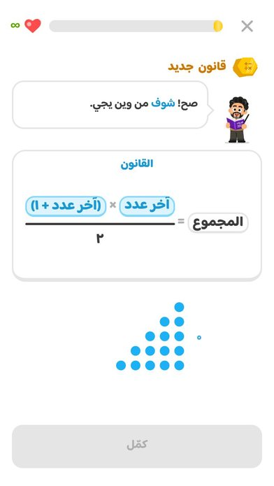
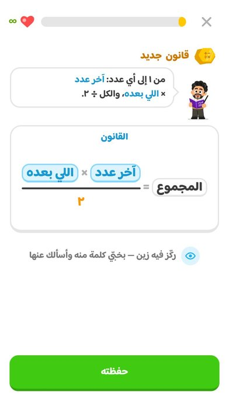
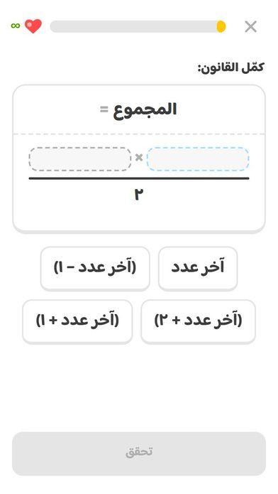
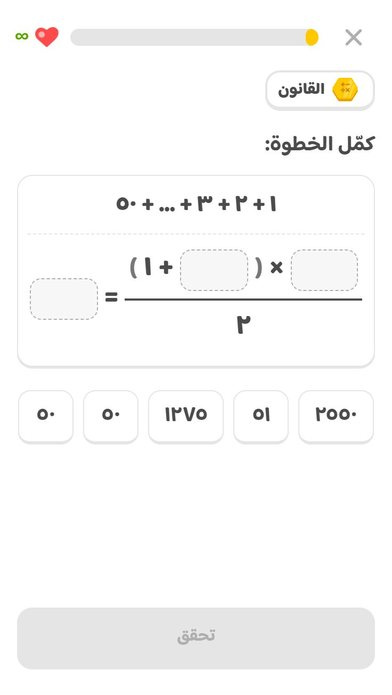
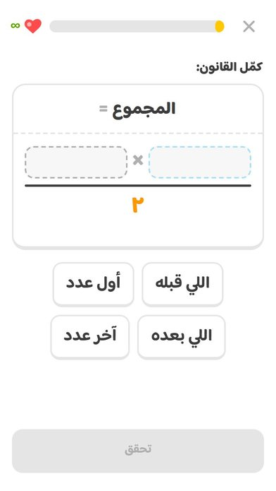
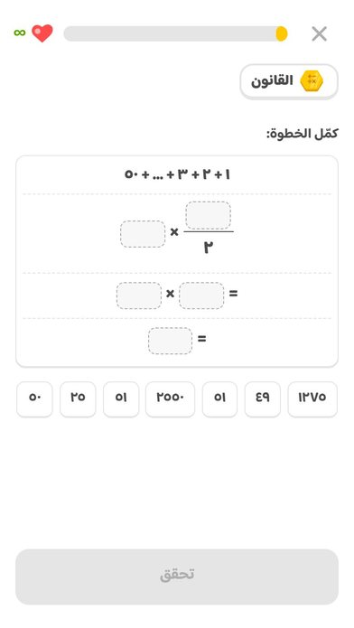
٣الشرح: النص أول، والبطاقة تنقسم معه
«you didnt make the half animation here»صورة ٩٤
قبل: الشرح كان مثلث نقاط، يعني الطالب يشوف ليش القانون صح بس ما يشوف كيف يحسبه.
الحين: الشرح يحسبها مثل ما يحسبها الطالب في دقيقة:
- «١ + ٢ + ٣ + … + ٢٠» كبير، وتحته الخطوات الثلاث: آخر عدد ← نصّه ← × اللي بعده.
- المجموع ينطوي في ٢٠، وبعدين «٢٠ ÷ ٢» ينشق من النص إلى ١٠ و١٠، وواحد منهم يطيح.
- والبطاقة تنقسم معه: الـ٢ البرتقالي اللي تحت الخط يقفز في قوس لين يدخل في ٢٠، المربع يومض برتقالي والرقم يتدحرج من ٢٠ إلى ١٠، وفوقه «نصّه» بالبرتقالي. الـ٢ يبقى مشطوب لأنه انستخدم.
- بعدين «× (٢٠ + ١)» يصير ٢١، و٢١٠ ينزل أخضر.
- آخر شي القانون يرجع كلام: «آخر عدد» تحته ٢٠ مرة ثانية والـ٢ يرجع، عشان آخر شي يشوفه الطالب هو القانون.
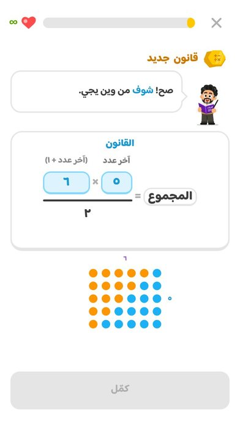
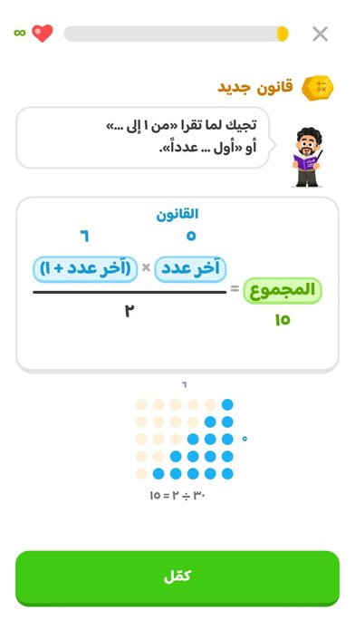
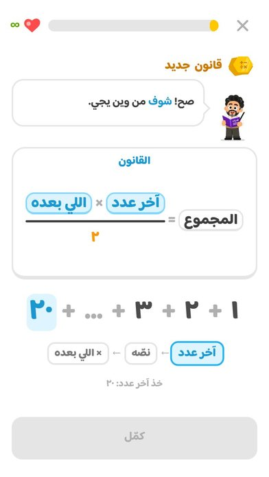
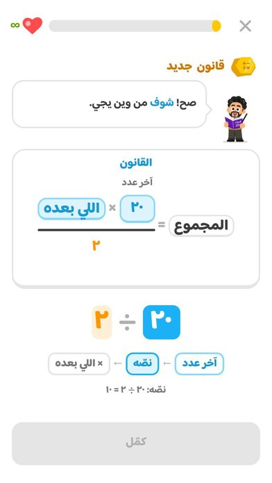
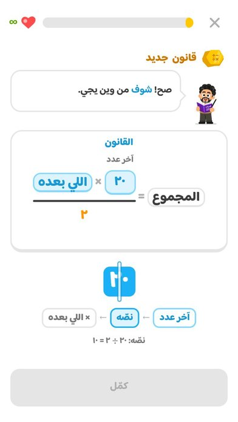
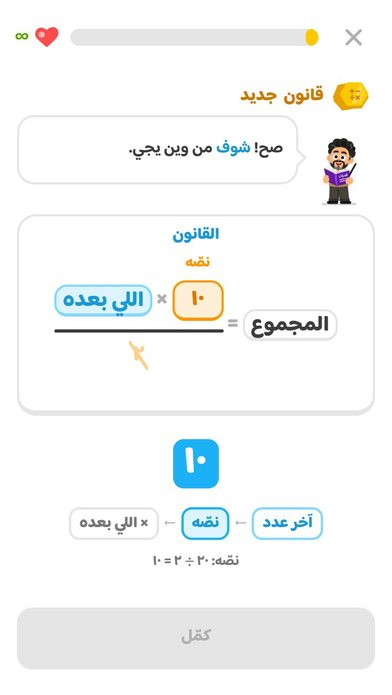
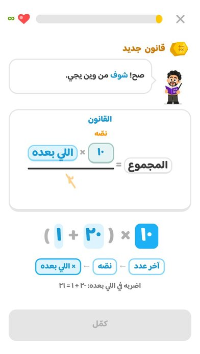
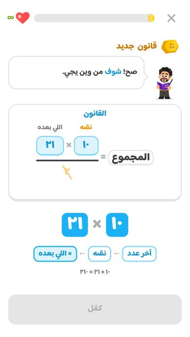
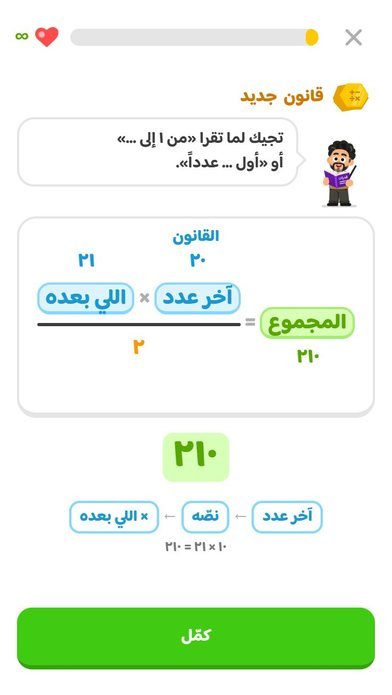
٤رقم القانون نفسه برتقالي
«for colors just make the 2 orange like this one»صورة ٨٧
- في كل القوانين، الرقم اللي هو جزء من القانون نفسه (مثل ÷ ٢ في المصافحات ومجموع ١ إلى ن) صار برتقالي. الباقي على ألوانه.
- الخمس نسخ الألوان اللي سويتها قبل موجودة في المعمل بس، ما دخلت التطبيق: tools/law-colors.html.
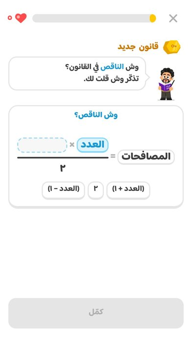
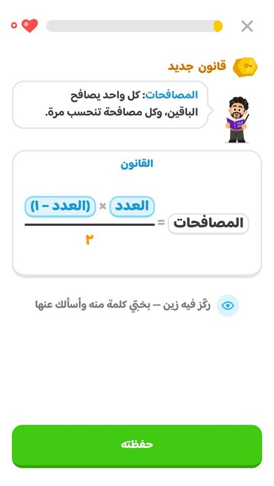
٥«جرّب» في البداية: ما تتهز، وبطاقة القاعدة صارت أحلى
«this screen in onboarding shake … make the animation like our answering animation»، وبعدها: «can you make this thing have better UI please»، «remove the borders»، «remove this one»صور ٧٦، ٧٧، ٨٨، ٨٩، ٩١
قبل: لما تجاوب، كانت تختفي ثلاث خيارات، وتطلع بطاقة القاعدة وسط الشاشة، وتتبدّل الورقة الخضراء مكان الزر، ويصغر كل شي ٩٣٪. يعني كل الشاشة تتحرك مرة وحدة.
الحين:
- الخيارات الأربع تبقى في مكانها. الصح يصير أخضر وينط، واللي اخترته غلط يبهت.
- الورقة الخضراء تطلع من تحت، وفهيم يرد: «صح! وبدون ولا حساب. وعندي حيل كثير زيها.» ما يتحرك ولا بكسل غير الورقة.
- بطاقة القاعدة في الورقة: لوحة بيضاء بدون إطار وبدون لمبة. أ٪ من ب = ب٪ من أ، «أ» بالأزرق و«ب» بالبنفسجي. بعد ما تطلع الورقة يتبادلون أماكنهم في الجهة الثانية، وتحتها: «اقلب الرقمين، والقيمة نفسها بالضبط».
| ٣٦٨ × ٦٥٢ | الحجم | فقاعة فهيم | الخيارات |
|---|---|---|---|
| قبل | ١٠٠٪ ← ٩٣٪ | ١٤٢ ← ١٣٠ | ١١٨ ← ٥٠ (ثلاث اختفت) |
| الحين | ١٠٠٪ ← ١٠٠٪ | ١٤٢ ← ١٤٢ | ١١٨ ← ١١٨ |
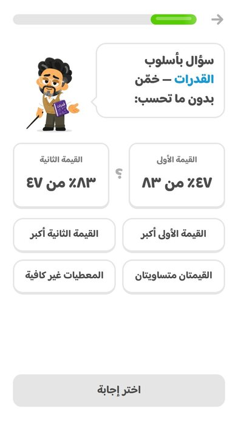
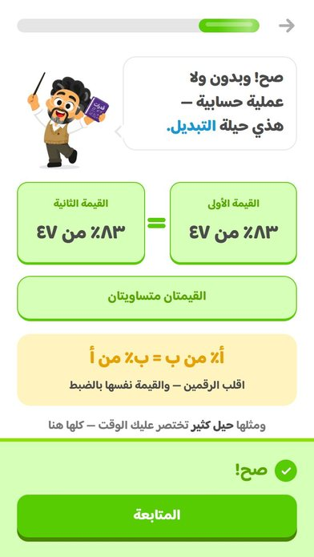
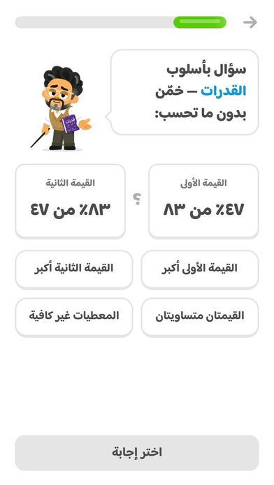
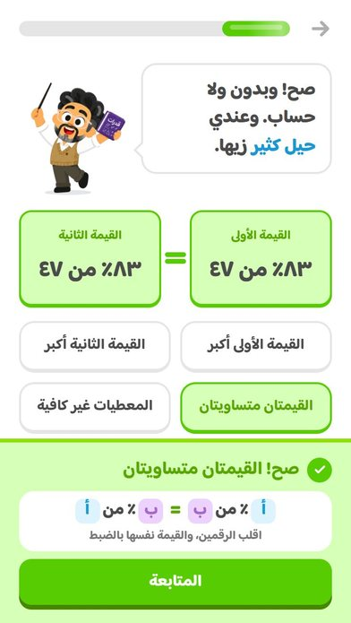
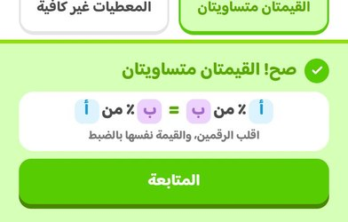
٦الشاشة ما تكبر ولا تصغر إذا جاوبت
«all of them have very bad problem that is that they are getting bigger when i answer … make it not happen again»صور ٧٣، ٧٤، ٧٥
السبب: الشاشة كانت تنقاس قبل الجواب على مكان زر «تحقق». لما تطلع الورقة الخضراء (وهي أطول من الزر)، كان التطبيق يعيد القياس فيصغّر الشاشة أو يكبّرها.
- كل سؤال له جواب يتقاس من البداية على المساحة اللي فوق الورقة الخضراء. أول شي يستخدم الفراغ اللي فوقه، وما يصغّر إلا إذا ما كفى.
- بعد ما تطلع الورقة ما ينعاد القياس أبداً، إلا إذا تغيّر حجم الجوال نفسه.
- إذا الجواب الصح بيتغطّى (مثلاً لو جاوبت غلط)، السؤال ينزلق لفوق بدون ما يتغيّر حجمه.
- نفس الشي في شاشات القوانين اللي تلعبها بيدك (المصافحات، الأزواج…).
| الشاشة (٣٦٨ × ٦٥٢) | قبل الجواب | بعد الجواب — قبل | بعد الجواب — الحين |
|---|---|---|---|
| «كمّل الخطوة» | ٩٠٪ | ٧٢٪ (صغرت فجأة) | ٩٠٪ (نفس الحجم) |
| «كمّل الخطوة» على ٣٢٠ × ٥٦٨ | ٧٧٪ | ٧٣٪ | ٧٧٪ |
| سؤال قدرات على ٣٢٠ × ٥٦٨ | ٨٧٪ | ٨١٪ | ثابت ٨٠٪ من البداية |
جربت ١٨٨ جواب (صح وغلط) في خمس دروس على مقاسين: ولا مرة تغيّر حجم الشاشة. الثمن: سؤال القدرات اللي فيه أربع خيارات طويلة يبدأ أصغر شوي على الجوالات القصيرة (٨٣٪ بدل ٨٩٪ على ٣٦٨ × ٦٥٢)، لأنه محجوز له مكان الورقة من البداية.
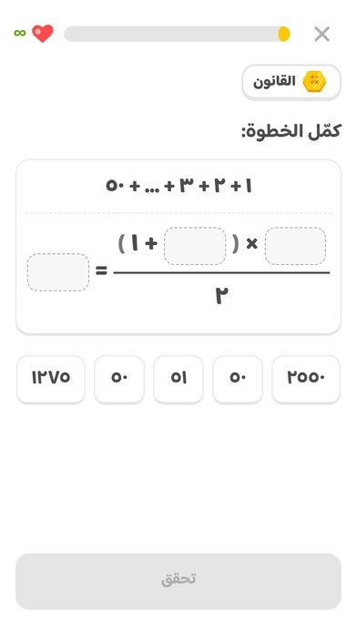
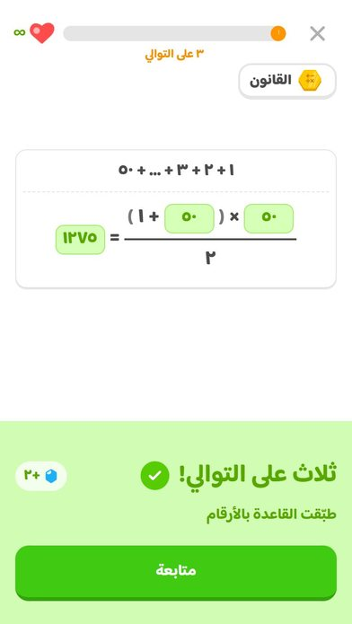
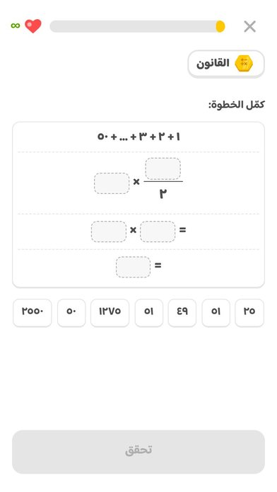
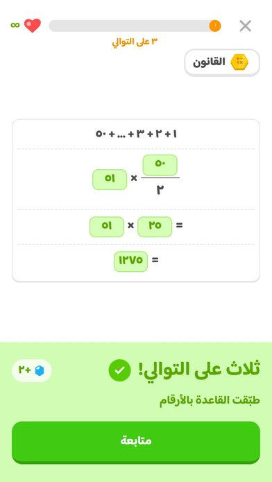
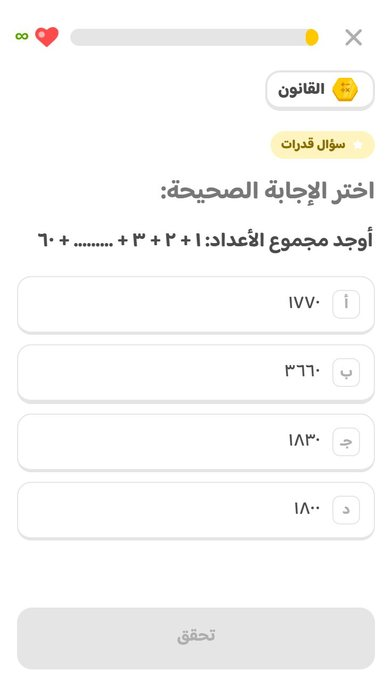
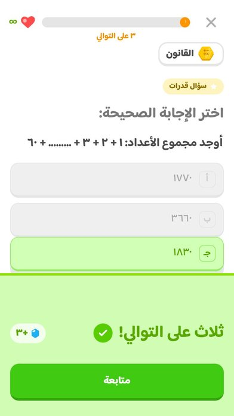
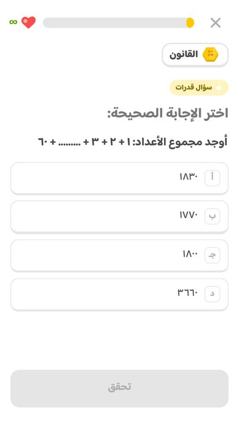
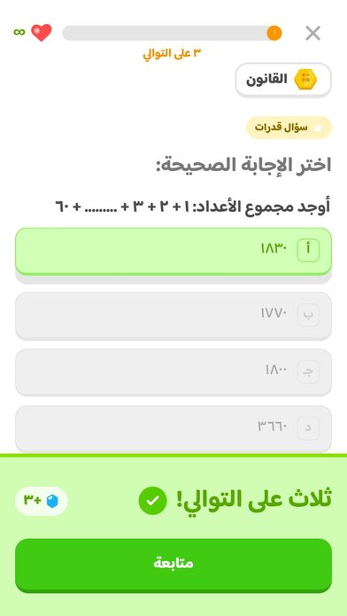
٧ترتيب الدرسين: سؤال ٤٥ انتقل، و«كمّل القانون بالأرقام» قبل المثال
«ليش ذا السؤال موجود في ترتيب العمليات»، و«ذي مفروض تكون قبل موب بعد ما فيه مثال فعلي»صور ٧٨، ٧٩
- سؤال القدرات
bigsum-02(٤٥ مكررة ست مرات) طلع من «مين يبدأ أول؟» وصار في «من ١ إلى أي عدد» بعد حيلة «أخرج العدد المشترك»، لأن ٤٥ هي العدد المشترك وتنضرب في ٦. كل سؤال قدرات ما زال ينعرض مرة وحدة بالضبط. - «كمّل القانون بالأرقام» (١ + ٢ + … + ن = _ × _: نصّه × اللي بعده) يجي قبل المثال المحلول بدل ما يجي بعده. ونفس الشي في درس الزوجية.
- شاشة «الأسرع: خذ نص آخر عدد أول» انحذفت، لأن القانون والشرح صاروا يقولونها.
«مين يبدأ أول؟» قبل ← الحين:
«من ١ إلى أي عدد» قبل:
«من ١ إلى أي عدد» الحين:
✓اللي اتشغّل بعد التعديل
validate.jsوvalidate_teach.jsوvalidate_learn.js: كلها OK.build_lesson_pages.js --checkوbuild_sitemap.js --check: الصفحات ما تغيّرت.- رقم النسخة في
sw.jsوindex.htmlصار ١٠١ (الموقع الحين على ١٠٠). - الملفات اللي تغيّرت:
js/app.js،css/style.css،js/law/law-core.js،js/law/law.js،js/law/law-more-bigsum.js،css/law.css،js/data/learn.js،sw.js،index.html،tools/lawapp/run.html،CLAUDE.md، ومعمل الألوان الجديدtools/law-colors.html. - أيقونة المسار
assets/icons/nav-home.svgمتغيّرة من قبل اليوم وما لمستها، بس بتدخل مع أي commit إذا ما استثنيناها. - ما سويت commit.